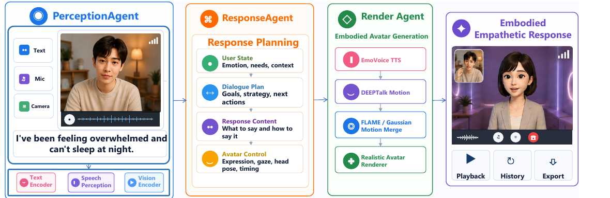
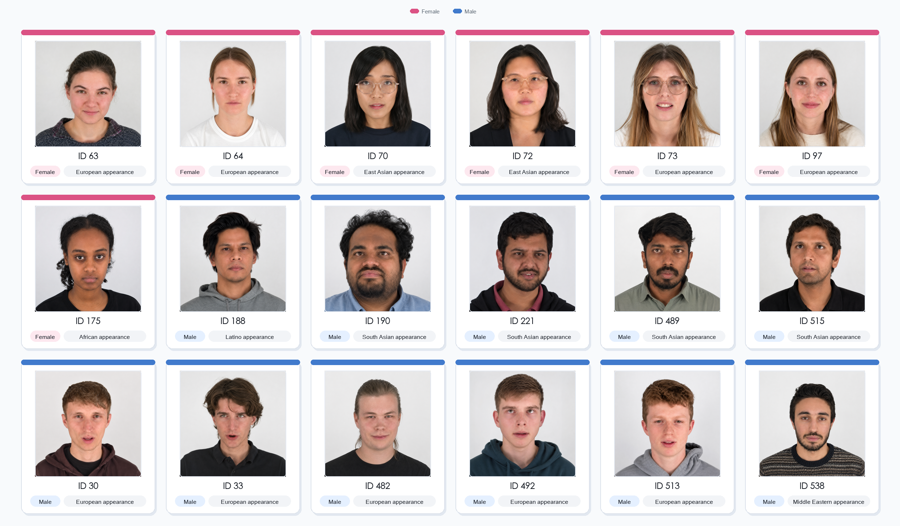
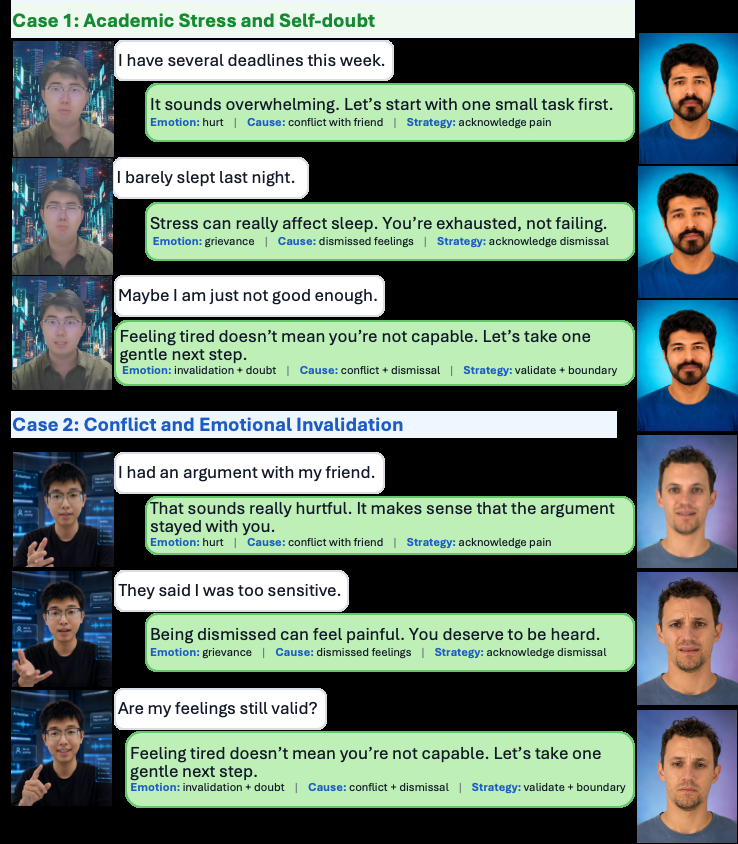

Multimodal Perception
PerceptionAgent converts raw audio-visual input into a structured percept with transcript, speech emotion, optional visual cues, dialogue history, and input metadata.
Paper Project Page
An open-source embodied empathetic chatbot that carries empathetic response generation from text-only exchanges into live, face-to-face interaction with photorealistic 3D avatars.
Interactive preview
Try a guided empathetic conversation in your browser. This public project-page demo uses curated responses and a pre-rendered avatar clip; it does not run the full GPU inference pipeline.
No text is uploaded or stored. For research demonstration only—not medical advice or crisis support.
This paper presents EmpaAva, to our knowledge the first open-source, agentic 3D-avatar empathetic chatbot, which carries empathetic response generation from text-only exchanges into live, face-to-face interaction. Through a video-call-like interface, a user speaks to a 3D digital human that reads their affect from speech and optional vision, and replies with emotional speech, lip-synced facial motion, and photorealistic 3D Gaussian avatar rendering.
At its core, an LLM coordinates a Tri-Agent Architecture in which perception, empathetic response planning, and embodied rendering form a closed loop. A Response Planning layer compiles each LLM reply into an executable multimodal plan, aligning voice, expression, rendering, and avatar behavior with one empathetic intent.
Demonstration of a user speaking with EmpaAva through the booth UI.

PerceptionAgent converts raw audio-visual input into a structured percept with transcript, speech emotion, optional visual cues, dialogue history, and input metadata.
ResponseAgent reasons over the user state and emits a structured reply plan that specifies the text, emotion and tone, avatar, voice, background, and supporting evidence.
RenderAgent synthesizes emotional speech and predicts frame-level FLAME parameters for jaw, lips, head pose, and expression.
A FLAME-to-Gaussian transfer applies motion to a rigged 3D Gaussian avatar and renders the response in a realistic call scene.


Multi-turn examples show EmpaAva tracking academic stress, self-doubt, interpersonal conflict, and emotional invalidation while grounding each response in emotion, cause, and strategy.